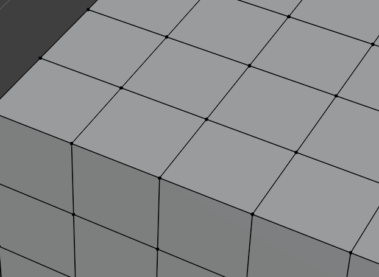
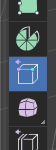
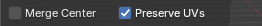
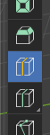
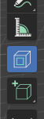
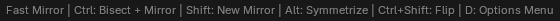
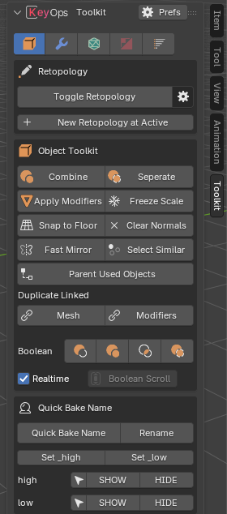
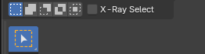

Modeling Tools
Fast, interactive modeling tools. While a tool runs, its keys are listed in the status bar.
Merge Tool
Drag a vertex or edge onto another to merge them.



More info
Toolbar · Edit Mode
| Input | Action |
|---|---|
| LMB drag | Drag from source to target |
| C | Toggle merge at center |
| RMB / Esc | Cancel |
Toggle in preferences: Merge Tool
Fast Loop Cut
Alt RHover to preview, click to cut. No slide step.

More info
Toolbar
| Input | Action |
|---|---|
| Scroll / + - | Number of cuts |
| E / hold Alt | Even |
| C / hold Shift | Center |
| F / hold Ctrl | Edge Flow |
Toggle in preferences: Fast Loop Cut
Cutter
Draw a shape to boolean-cut objects.

More info
Toolbar · Object Mode
| Input | Action |
|---|---|
| LMB drag | Draw the shape |
| B C N | Box / Circle / Ngon |
| Hold Shift | Swap box and circle |
| Hold Ctrl | Snap |
| 1–4 | Difference / Union / Intersect / Slice |
| Scroll | Circle segments |
The boolean is only added when you release, so drawing stays fast on heavy meshes.
Toggle in preferences: Cutter
Fast Mirror
Alt XClick a block to mirror on that axis.
More info

| Click | Mode |
|---|---|
| LMB | Mirror modifier with clipping |
| Ctrl LMB | Bisect + Mirror |
| Shift LMB | New Mirror modifier |
| Alt LMB | Symmetrize |
| Ctrl Shift LMB | Flip |
| D | Options menu |
Toggle in preferences: Object Toolkit
Fast Bevel
Drag for width, scroll for segments.
More info
Add Modifier Pie
Ctrl-click adds a new bevel limited to 30°, Ctrl Shift-click 60°. In Edit Mode a new bevel only affects the selected edges. Tab opens settings, Shift Enter applies.
Fast Array
Drag for offset, scroll for count.
More info
Add Modifier Pie
X Y Z axis, R / C relative or constant, 1 2 3 for up to three arrays.
Fast Solidify
Drag for thickness.
More info
Add Modifier Pie
1 2 3 offset, 4 simple / complex, R rim only, A add new, Tab options.
Booleans
Ctrl NumpadSelect cutters, then the target, then press a shortcut.

More info
Object Mode
| Shortcut | Operation |
|---|---|
| Ctrl Numpad - | Difference |
| Ctrl Numpad + | Union |
| Ctrl Numpad * | Intersect |
| Ctrl Numpad / | Slice |
Realtime off hides booleans while you move objects. Use Parent Used Objects so cutters follow the target.
Snap to Floor
Alt 3Drops the selection onto the grid floor.
More info
Object Mode
Alt-click the button in the Toolkit panel to snap each object on its own.
Toggle in preferences: Object Toolkit
Select Similar
Select everything similar to the active mesh or element.
More info
Object & Edit Mode
In the Toolkit panel, the Object Mode Select menu and Edit Mode Select › Select Similar. With Hard Ops installed it's also in its Select Grouped menu.
X-Ray Select
Always select through the mesh.

More info
Edit Mode
X-ray only turns on while you drag, so the mesh stays solid.